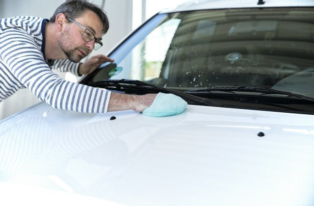
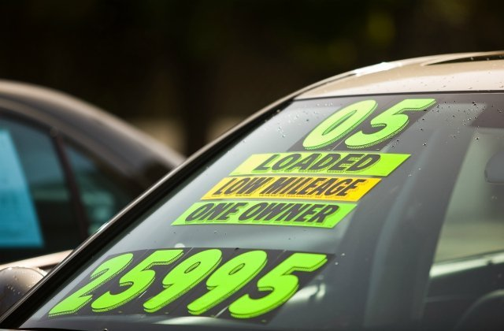

June 17, 2020
June 17, 2020
When you’re selling a car, there are many things you can do to make sure you get as much money from the sale as possible. Getting the best sales price can help you pay off your old loan and make a large down payment on a new car. Your options range from simply trading it in to a car dealership to selling it yourself to a private-party buyer. You’ll potentially get the most money from selling it yourself, but it takes more preparation and perseverance than trading it in.
No matter how you sell your car, you’ll need to know how to negotiate, avoid intimidation, and be willing to walk away from a bad offer.
Taking a step-by-step approach is the best way to get the most out of selling your current car.
There are several ways to sell a car. Each has its pluses, minuses, and potential to get you the most cash.
The easiest way to sell your car is simply to offer it as a trade-in to the dealership you’re buying your new car from. It won’t get you top dollar from your trade, but it may save you some sales tax.
You have to be careful when you trade a car in, however. Many salespeople will want to mix the price of your new car, your trade-in value, and the cost of your financing into one confusing array of numbers that makes it easy for them to overcharge you. Instead, you want to treat each component as a separate transaction, and negotiate every facet.
Dealers typically won’t offer you the best price for several reasons. First, they’ll be taking care of all of the paperwork for the trade-in sale and title transfer, saving you considerable time and hassle. Second, they’ll be refurbishing and advertising the car for resale, and both cost them money to do.
Trading your car in at a dealership can save you some money in sales tax, however. In many states, you only have to pay the difference between the price of your new car and the trade-in value, rather than the entire purchase price of the car. If you have a high-value trade in, the amount of sales tax savings can be significant.
There’s a new way to sell your car, and it takes much of the hassle out of the process while getting you a good price. An instant cash offer (ICO) can be done online, over the phone, or at the dealership. You provide your car’s VIN or license plate number, plus a description of its mileage and condition, and you get an instant purchase offer. The more detailed and accurate you are, the more likely the initial offer will be the amount you get.
Selling your car yourself can potentially yield the highest price, though it takes, by far, the most work. Not only do you have to spend time preparing the car for sale and gathering years worth of sales paperwork, you also have to meet with buyers and complete all of the sales documents.
Many of the following steps in this guide are focused toward car owners who are selling their cars to private parties, though portions apply to dealer trades and instant cash offers.
When you’re selling to a private party, a vehicle with a well-documented service and repair history can command a higher price than one with no paperwork. Gather as many of the service documents as you can find, so you’re prepared to show it to potential buyers. If the car has been repaired following a collision, proof of what was repaired and that it was fixed by a reputable shop can reduce buyer uncertainty. If you’re the first owner of the car, showing the initial purchase documents can get you a little more cash. One-owner cars are typically more valuable than those that have changed hands multiple times.
Having all of the service records is not as critical with a trade-in or an instant cash offer, though having them handy will save you time if they ask to inspect them.
A vehicle history report is like an X-ray into a car’s past. Buyers typically will purchase one from a company such as Carfax or Autocheck if they’re serious about buying your car. You can make it easier for them by getting one yourself, and providing them with a copy. A side benefit of getting one yourself is you’ll be able to see what’s in the report and be prepared to correct any errors and explain any negative information.
Sellers who still owe money on the car they’re selling should contact their lender to determine the procedure for getting the title to the vehicle. If you’re trading the car in or accepting an instant cash offer, the dealer you’re working with will usually take care of this step. With a private-party sale, you’ll want to know how to do it and how long the process takes. Smaller lenders can often produce your title quickly. Larger or out-of-town lenders may take considerably more time to provide the document.
The amount of effort you need to spend in preparing your car for sale depends on who you’re selling it to. It’s a balancing act – you don’t want to spend too much time and money if you’re not going to get much return on your investment. You also don’t want to skip simple steps that can help your car sell more quickly and for more money.
If, for example, you have a 15-year-old junk car with 200,000 miles on the odometer, no amount of washing or waxing will help you get more money out of it. On the other hand, if you’re selling a three-year-old luxury sedan, putting the time and money into some cosmetic reconditioning can pay off at negotiation time.
In some states, you’ll have to have an up-to-date vehicle inspection or smog compliance certificate before you can sell. In others, you don’t have to provide the certificate, but you need to provide the buyer with a warranty that says it will pass the inspection or test. If it doesn’t, you may have to accept the car back or pay for repairs.
With any type of sale, you never get a second chance of making a first impression. You’ll want to at least give your vehicle a thorough wash and wax, then vacuum out the interior. Clean the interior glass and open the windows to let the car air out. If the vehicle has been smoked in, you’ll have an extra challenge when you go to sell, as many buyers won’t consider a car that smells like cigarette smoke.
You want to create a car that others can see as their own, rather than riding around in someone else’s. That means taking off the bumper stickers and removing any personal items. It’s a good time to unpair your phone and remove personal information from the infotainment system, so you don’t forget at sale time.
Depending on the age and value of your car, you’ll want to consider fixing minor cosmetic damage. Things such as door dings, scratches on the bumper, and cracked windshields can be repaired inexpensively, and many companies can come to you for the repairs. Check all of the lights (exterior and interior) and make sure the car starts with ease.
You want to avoid having potential buyers walk around your car, thinking about all of the things that need to be fixed, and totaling up the cost of those repairs. They’ll bring each issue they see into the negotiation process, demanding a discounted price on the car.
Experts suggest a day’s work and a few hundred dollars is about the right amount to put into a used car. If you’re trading it in or asking for an instant cash offer, you probably can get away with a bit less effort, as the dealer will refurbish the car before they put it on the lot.
What you don’t want to do is make major repairs that won’t pay off with a higher sales price. Better to take a discount because of worn tires or brakes than spend a lot of money that you won’t make back from the sale.
Deciding the right price to ask for your used car is a bit of a science and a bit of an art. It needs to be high enough to allow room for negotiation, but low enough that potential buyers aren’t scared away. If the price you ask is below similar cars in the market, it will get more attention and, potentially, a faster sale. A vehicle that’s priced higher than others will usually take longer to sell.
By looking at online vehicle valuation tools, you can get an idea of what cars are selling for in your area. You’ll see a few numbers listed, including a wholesale value, which is what you could expect when you trade your car in at a dealership. The retail value is the price a dealer might advertise the car for. As a private-party seller, the price you want to set should be somewhere in the middle. The prices you find will be more precise if you accurately describe your car’s condition, equipment, and mileage.
While the online valuation tools will give you some insight into car values, you should also look at the prices being asked for similar cars in your area. A quick check of Craigslist might show a half dozen other 2015 Honda Accords in your area – all with prices lower than what you were thinking. With that knowledge in hand, you can set an attractive price for your car.
If the price you’re asking is much higher or lower than others in the marketplace, you’ll want to be able to explain why. You might be charging more because your vehicle has brand-new tires, for example, or less if your car has collision damage.
In the past, advertising a used car meant taking out a newspaper ad and parking the vehicle in a grocery store parking lot. Today, newspaper classifieds are a waste of money and placing a “For Sale” sign in your window can earn you a parking ticket in some cities.
You can now advertise your private-party used car on a number of free and low-cost online sites, such as Craigslist. There’s little delay in publication, and you can pull the ad down as soon as the vehicle sells.
When designing your ad, you should include a detailed description of the vehicle, includings its mileage, trim level, options, and any add-ons you think add value. Include as many clear, sharp, and well-exposed photos as you can. Just be careful you don’t show your home address and obscure your license plate in the photos. Let buyers know what forms of payment you would accept and what hours you’re available to show the car. Be sure to say you’re selling the car as-is, with no warranty other than any coverage leftover from the manufacturer’s original warranty.
It’s a good idea to set up a separate email address for the advertisement. While the online marketplace gives you great reach for little or no money, it’s also infested with spammers and scammers. Having an email address you can abandon after the sale can save you a lot of hassle.
You can use code words, such as “firm” to communicate your willingness to negotiate the price. Using phrases such as “best offer” or “all offers considered” invite low-ball offers. “Must sell” tells potential buyers you’re desperate to unload the vehicle.
When you trade your car in at a dealership, or get an instant cash offer, you don’t have to worry about showing your car. You just hand over your keys to the dealership’s appraiser, and they take care of the rest. When selling your car on your own, you have to work harder.
There are good ways to show your car to potential buyers, and not-so-great ways. Unfortunately, not everyone who responds has good intentions, and you have to take care to ensure your personal and financial security. Never meet at your home, for example. Instead, you want to meet potential buyers in fairly busy locations – ideally with plenty of video surveillance – such as a shopping mall parking lot. Of course, the final buyer will see your home address in the sales paperwork, but you don’t have to share it with every potential buyer.
Some police agencies have set up “safe exchange zones” where buyers and sellers can meet. The Gresham, Oregon police department’s location, for example, is located steps from the agency’s front door and is monitored by video surveillance 24 hours a day.
“It’s a little more assurance that things are going to happen the way that they want it to happen,” says Sgt. John Rasmussen of the Gresham P.D., adding “people with ill intentions are going to want to steer away from it.”
Right or wrong, potential buyers will judge you just as much as they evaluate your car. Being evasive or giving them a reason not to trust you is just as damaging to a potential sale than black smoke billowing from your car’s exhaust pipe. You need to be honest, without answering any questions they don’t ask or are not related to the sale.
Offers to buy your car sight unseen, with no test drive or independent inspection, should be approached with trepidation – especially if they come from an out-of-town buyer. There’s a good chance it’s coming from a scammer who will leave you with a fake check and without a car.
In general, you want to accompany any prospective buyer when they test drive your car. Before you hit the road, though, there are a couple of things you’ll want to do to ensure your personal safety. Text a friend a copy of the potential buyer’s driver’s license and tell them a time you’ll call or text them to let them know the drive is over. If you don’t, have them call your phone to ensure you’re okay. It’s not a good idea to be outnumbered, even if it means having a friend riding along or rescheduling the drive. Follow your intuition, and don’t allow the test drive to proceed if you’re not comfortable.
It is critical you don’t allow someone to drive your car if you sense they are impaired by alcohol or drugs. Likewise, if they decide it’s a chance to demonstrate their high-performance drive skills or don’t seem to have any experience behind the wheel at all, you need to terminate the test drive immediately. Not only are they putting your safety at risk, but also the reputation you have with your auto insurance company.
Have a pre-set amount of time allotted for the drive, and don’t allow the buyer to get too far afield or drive into unfamiliar or sketchy areas. The test drive is an opportunity for them to get a feel for the car’s ride and condition, not a free chance for them to run all of their errands. About 30 minutes is plenty of time for them to do so.
Buyers should never purchase a used car without a thorough pre-purchase inspection by an independent mechanic, and you need to be prepared for the request. You can either take the car to the mechanic of their choice, arrange a time to meet a mobile mechanic at your home or office, or drive to the shop with them.
If an issue or two comes up with the inspection, it’s not the end of the world. The buyer may ask you to lower your price, but it’s your decision whether to do so or not. In some states, once you know a problem exists, you’re required to make the repair so the vehicle is saleable. You should not feel obligated by a potential buyer or their mechanic to make any repair, or use their shop to do so.
If possible, get a copy of the mechanic’s report. If the current deal falls through, you’ll have the document to show your own mechanic and discuss whether repairs should be made. If it’s a clean report, you can show it to other potential buyers.
One of the biggest reasons many people do dealer trade-ins or accept instant cash offers is they’re intimidated by the idea of negotiating the sale price of the car. Many people don’t like the confrontational experience of haggling a price. It’s important to remember that selling a car is a business decision, and emotions should not play a part in your negotiations.
Where many sellers have problems is when they have emotional attachments to the car they’re selling, and those attachments tend to let you gloss over the car’s imperfections. While those squeaks and rattles no longer bug you, they might bother a potential buyer. Experienced car buyers (and some dealership salespeople) will throw a very low initial offer your way, and point out every problem with the car. It’s an effort to shake your confidence in the price you’ve set. Since you’ve done your research, you’ll be able to counter their bid with a counteroffer you can back up.
The basic rules of rules of negotiating include the following: A buyer can’t go lower than the initial amount they offer and you can’t go higher than your initial sales price. You want to make the buyer state the first offer. When you’re done saying what you need to say, stop talking. The more you talk, the weaker your position becomes.
Remember, you can walk away from any offer that you don’t like. You’re under no obligation to take an offer just because the buyer is using a hard-luck story, is bullying you, or has to have your car immediately. You also shouldn’t put pressure on yourself to sell a car by a certain date. That artificial deadline can lead to you taking less for the car than you should.
When you trade your car in at the dealership or accept an instant cash offer, you don’t have to worry about preparing and filing any paperwork – the dealer will usually do it all for you.
If you’re selling the car yourself, check with your state’s DMV (as well as the buyer’s if they’re from out of state) to determine what title and registration documentation needs to be completed. You’ll want to find an automotive Bill of Sale form, which can be downloaded from many websites. You’ll want to ensure it includes the phrase “vehicle is sold as-is,” is clear that you’re not providing any warranty, and states the sale is final.
The last part of your car sale is getting paid. With a dealer trade-in, they’ll automatically apply your trade-in value to your new car (or new-to-you used car). When you’re getting an instant cash offer, they can either put it toward your new ride or cut you a check that you can take to the bank. If you still owe money on the car, most dealers can directly pay the lender and arrange transfer of the title.
For private-party sellers, the safest way to get paid is to meet the buyer at their bank, have them get a cashier’s check from a teller, and sign off on any paperwork before you leave. It has become easy to forge cashier’s checks, so you’ll want to check with the issuing bank to ensure it is authentic before you sign off on your vehicle’s title.
Be especially careful if the buyer wants to use an escrow service, making sure it is a legitimate company. Some escrow services are scams. Your local consumer protection bureau or state’s attorney general’s office can help you determine the company’s authenticity.
A common scam today has the buyer send you a check for more than your asking price, with instructions to refund the difference. Usually, the check you receive is a fake, and the money you return (and the car if you sign over the title) is gone forever.
Some buyers may ask you to finance their purchase. It’s common in families, but is rarely a smart move. If it’s a family member who doesn’t make payments, things can get ugly quickly. If it’s someone you don’t know, you probably don’t have the ability to check their credit report to see if they’re creditworthy enough to warrant financing.